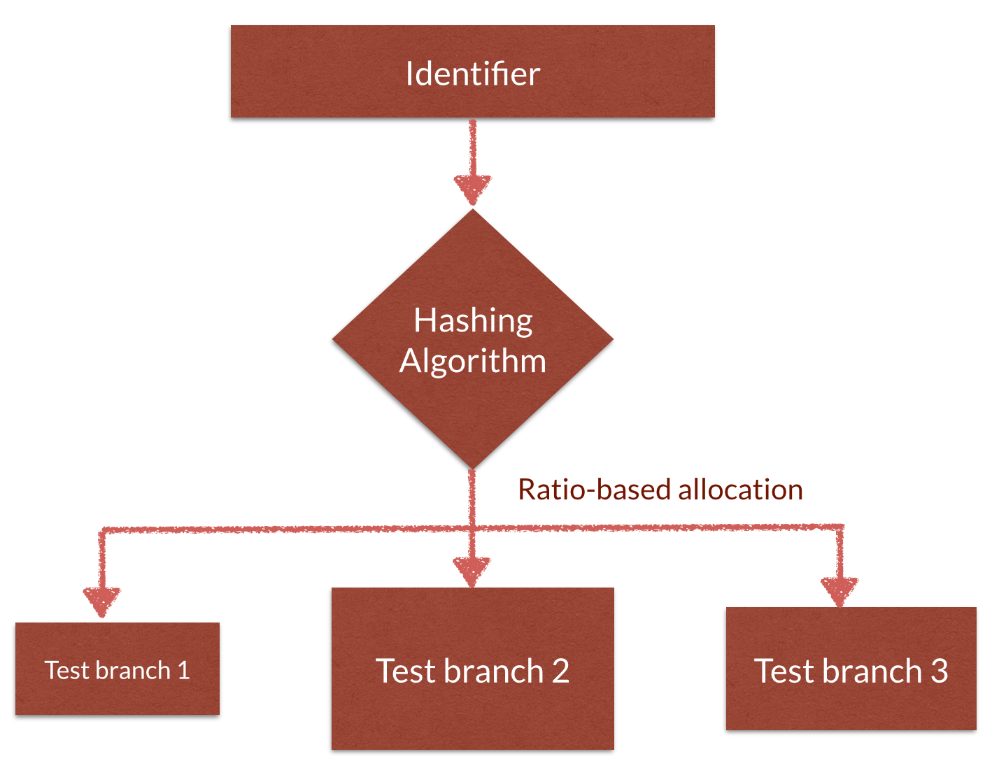

"To B, or to A? That's the question."
About
Hamlet is an AngularJS A/B testing framework. Plug in Hamlet to your AngularJS application to test multiple variants of content on any page.
Features
Hamlet supports the following features:
- Supports testing multiple variations. Hamlet is not just an A/B testing framework. It's an A/B/C/D/... testing framework!
- Show different portions of content to different audiences on the same page. Supports DOM element level variations.
- Control ratio of how much of the audience needs to see each variation.
- Stickiness. Let Hamlet know an ID / session value that identifies a unique user, and Hamlet ensures stickiness. Once a user sees a version, they'll always see the same version, even in multiple browsers.
- Test branch allocations persist across pages and browsers! Use the same ratios, and you can have the user allocated to the same test branch across multiple pages. Even if the user accesses them with different browsers.
How to use
- Identify a value (some sort of user ID) that uniquely identifies your users.
- Create multiple branches (up to 10 branches) by adding a
<div>for each branch, and add code your variants. - Configure ratios (0 - 1) for each branch to control how many of your users see each branch.
And Hamlet does the rest
<div ab-test ab-test-qualifier="{{userId}}">
<div test-branch ratio="0.1">
<h4>Branch 1</h4>
</div>
<div test-branch ratio="0.6">
<h4>Branch 2</h4>
</div>
<div test-branch ratio="0.3">
<h4>Branch 3</h4>
</div>
</div>Javascript usage
Need Hamlet's hashing logic in your Javascript code? Use this if you need to branch users into calling different business services, or redirecting to different routes in a router. The built in HashService calculates and returns a branch for your target user.
Usage
HashService.calculateBucket(qualifier, rangeArray)
Arguments
qualifier: Any user identifier, like a user ID.
rangeArray: An array of numbers that add up to 10. Split based on the number of tests you want to run.
Examples
HashService.calculateBucket("foobar", [5, 5]);
The above code splits the users 50-50 and returns either 0 or 1.
HashService.calculateBucket("foobar", [3, 3, 4]);
The above code splits the users into 3 buckets. The possible return values are 0, 1 or 2. There is a 30% chance of the return being 0 (first bucket), 30% chance of returning 1 (second bucket) and 40% chance of the third one.
Note: This hashing is "persistent" as well for a given qualifier. For a given qualifier and a given range, the output is always consistent.
How it works
Hamlet breaks down the supplied identifier by running through a hashing algorithm. It then chooses one of the available test branches based on the ratio. For example, a branch with ratio 0.4 is twice as likely to be picked as a branch with ratio 0.2.
Get Hamlet
Bower
bower install hamlet
JS / Source
https://github.com/koushikkothagal/hamlet